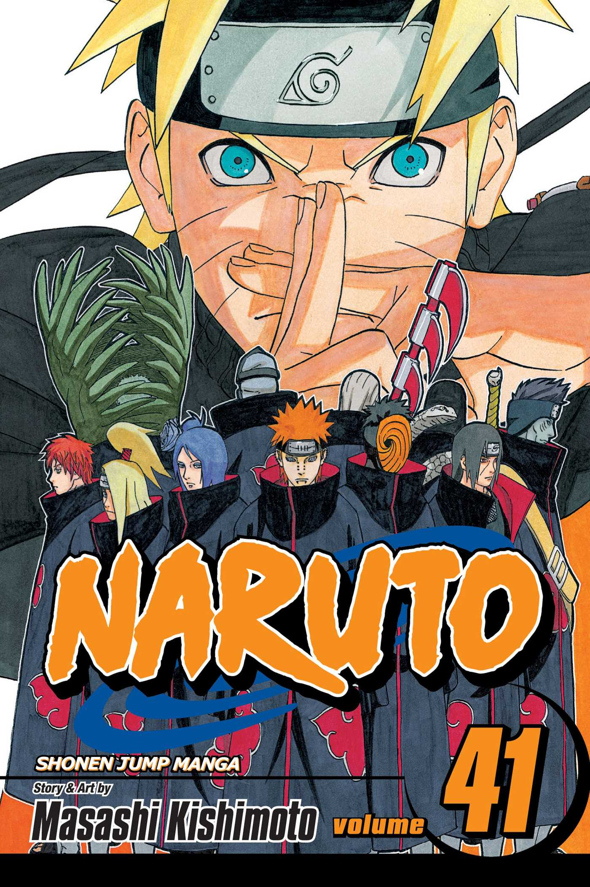
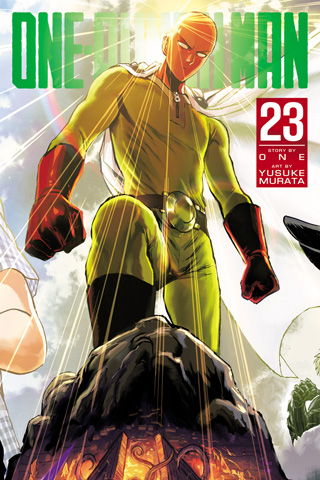
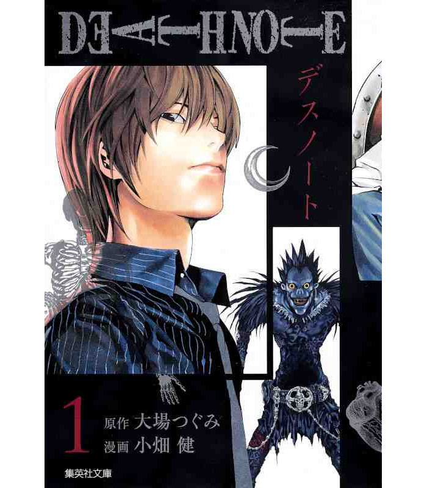
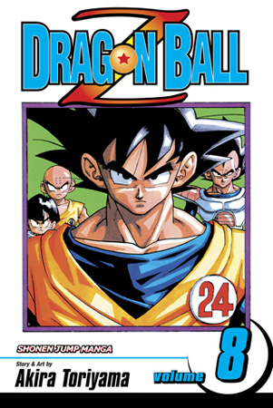
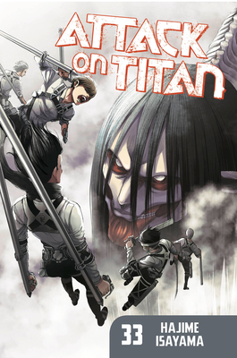
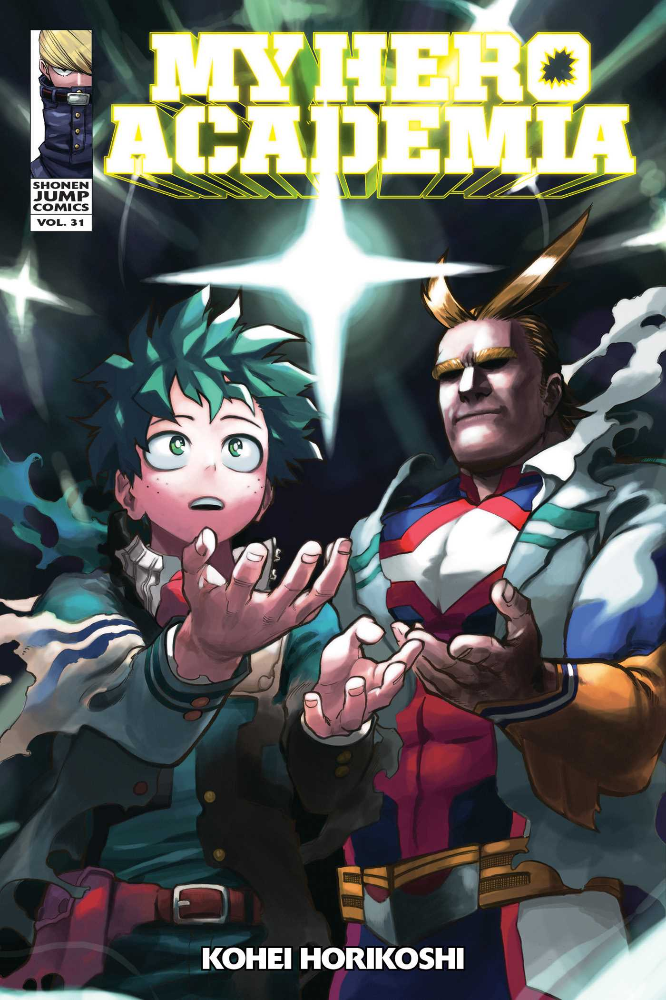

Demon Slayer

Demon Slayer: Kimetsu no Yaiba is a Japanese manga series written and illustrated by Koyoharu Gotouge. It was
serialized in Shueisha's shōnen manga magazine Weekly Shōnen Jump from February 2016 to May 2020, with its
chapters collected in 23 tankōbon volumes.
Naruto

Naruto is a Japanese manga series written and illustrated by Masashi Kishimoto. It tells the story of Naruto
Uzumaki, a young ninja who seeks recognition from his peers and dreams of becoming the Hokage, the leader of
his village.
One Piece
.jpg)
One Piece is a Japanese manga series written and illustrated by Eiichiro Oda. It has been serialized in
Shueisha's shōnen manga magazine Weekly Shōnen Jump since July 1997, with its individual chapters compiled
into 106 tankōbon volumes as of July 2023.
Jujutsu Kaisen

Jujutsu Kaisen is a Japanese manga series written and illustrated by Gege Akutami. It has been serialized in
Shueisha's shōnen manga magazine Weekly Shōnen Jump since March 2018, with its chapters collected and
published in 23 tankōbon volumes as of July 2023.
One-Punch Man

One-Punch Man is a Japanese superhero manga series created by One. It tells the story of Saitama, a
superhero who, because he can defeat any opponent with a single punch, grows bored from a lack of challenge.
One wrote the original webcomic manga version in early 2009.
Death Note

Death Note is a Japanese manga series written by Tsugumi Ohba and illustrated by Takeshi Obata. It was
serialized in Shueisha's shōnen manga magazine Weekly Shōnen Jump from December 2003 to May 2006, with its
chapters collected in 12 tankōbon volumes.
Dragon Ball

Dragon Ball is a Japanese manga series written and illustrated by Akira Toriyama. Originally serialized in
Shueisha's shōnen manga magazine Weekly Shōnen Jump from 1984 to 1995, the 519 individual chapters were
printed in 42 tankōbon volumes.
Attack on Titan

Attack on Titan is a Japanese manga series written and illustrated by Hajime Isayama. It is set in a world
where humanity is forced to live in cities surrounded by three enormous walls that protect them Attack on
Titan (進撃の巨人) is looked on as one of the best manga in this modern age.
My Hero Academia

My Hero Academia is a Japanese superhero manga series written and illustrated by Kōhei Horikoshi. It has
been serialized in Shueisha's shōnen manga magazine Weekly Shōnen Jump since July 2014, with its chapters
additionally collected into 38 tankōbon volumes as of June 2023.
Bleach

Bleach is a Japanese manga series written and illustrated by Tite Kubo. It follows the adventures of a
teenager Ichigo Kurosaki, who inherits his parents' destiny after he obtains the powers of a Soul Reaper—a
death personification similar to the Grim Reaper—from another Soul Reaper, Rukia Kuchiki.